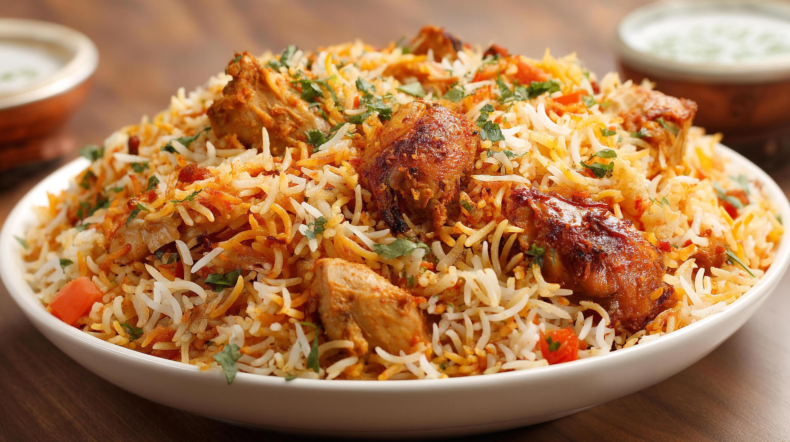
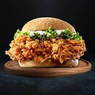
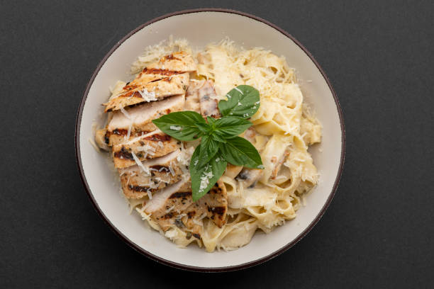
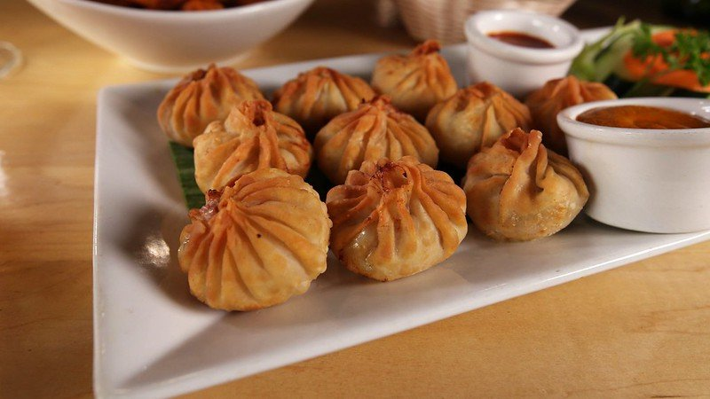

Food Recipe Card:-







Chicken biryani:-
chicken biryani ingredients:-
1.5 lbs bone-in chicken pieces
2 cups aged basmati rice, soaked 30 min
2 cup plain yogurt
3 large onions, thinly sliced
1 tbsp ginger-garlic paste
1 tsp biryani masala
1/2 tsp turmeric
1 tsp red chili powder
Pinch saffron soaked in 3 tbsp warm milk
4 green cardamom pods
3 whole cloves
2 bay leaves
1 cinnamon stick
1/4 cup fresh mint leaves
1/4 cup fresh cilantro, chopped
3 tbsp ghee
Salt to taste
Chicken Biryani Making:-
Marinate chicken with yogurt, ginger-garlic paste, biryani masala, turmeric, chili powder, and salt. Refrigerate for at least 1 hour (overnight is best).
Deep-fry or slowly caramelize the sliced onions in ghee until dark golden and crispy. Remove half and set aside for garnish.
In a large heavy pot, spread the marinated chicken evenly on the bottom with the remaining fried onions.
Parboil the soaked rice in salted water with cardamom, cloves, bay leaves, and cinnamon until 70% cooked (rice should still have a bite). Drain.
Layer the par-cooked rice over the chicken. Drizzle saffron milk in lines across the top. Scatter mint, cilantro, and reserved fried onions.
Dot with ghee. Seal the pot tightly with aluminum foil, then press the lid on top. Cook on the lowest heat for 25-30 minutes.
88 Remove from heat and let it rest sealed for 10 minutes. Gently fold layers together when serving. Accompany with cucumber raita.
Chicken zinger burger:-
chicken marinade ingredients:-
2 cups buttermilk
2 tablespoons hot sauce of your choice (our favorite is Frank’s Red Hot)
1 tablespoon garlic powder
1 teaspoon ground paprika
1 teaspoon salt
½ teaspoon ground black pepper
1 cup all-purpose flour
mixture of bread chicken:-
If desired of course. (Make sure to see the sauce recipe below too if that’s something you’d love to top this with!)
4 large hamburger buns (brioche buns are our FAVE!)
4 slices cheddar cheese
2 large ripe tomatoes, sliced
½ head iceberg lettuce, washed
8 pickle slices
Club Sandwich:-
club sandwich ingregients:-
3 slices of bread (white, whole-wheat, or sourdough)
3–4 slices of cooked chicken breast or deli turkey
2–3 strips of crispy beef or turkey bacon
1 slice of cheddar cheese
3–4 thin slices of fresh tomato
2 leaves of crisp lettuce
club sandwich making:-
1-Toast the Bread: Lightly butter all three slices of bread. Toast them in a pan over medium heat or use a toaster until they are golden and crisp.
2-Assemble Layer One: Place the first slice of toast down and spread it with mayonnaise. Add the lettuce and tomato slices, then season with a pinch of salt and pepper. Lay the crispy bacon strips on top.
3-Add the Middle Slice: Spread mayonnaise on both sides of the second slice of bread and place it over the bacon.
4-Assemble Layer Two: Layer the chicken or turkey slices over the middle toast, and place the cheese slice right on top of the meat.
5-Close the Sandwich: Spread mayonnaise on the last slice of toast and place it on top, mayo-side down.
6-Cut and Serve: Insert four toothpicks into the four corners of the sandwich to hold it together. Use a sharp knife to cut diagonally into four triangle-shaped pieces.
alfredo pasta:-
pasta ingredients:-
300 gram alfredo pasta
2 tbsp
unsalted butter
2 cloves
garlic, minced
1 cup
heavy cream
1 cup
grated Parmesan cheese
to taste
salt and black pepper
2 tbsp
chopped parsley (optional)
alfredo pasta making:-
1-Cook pastaBoil fettuccine in salted water until al dente, then drain.
2-Make sauce baseMelt butter in a pan, sauté garlic until fragrant.
3-Add creamPour in heavy cream and simmer gently for 2–3 minutes.
4-Add cheeseStir in Parmesan until melted and sauce thickens.
5-CombineToss cooked pasta in the sauce until evenly coated.
6-Season and serveAdd salt, pepper, and garnish with parsley before serving.
chicken momos:-
ingredients:-
2 cups
all-purpose flour
1/2 tsp
salt
1/2 cup
water (for dough)
250 g
ground chicken
1/2 cup
finely chopped onion
1/4 cup
finely chopped cabbage
2 tbsp
chopped spring onion
1 tbsp
soy sauce
1 tsp
ginger-garlic paste
1/2 tsp
black pepper
1 tbsp
oil
momos making:-
1-Prepare doughMix flour, salt, and water to form a soft dough. Cover and rest for 20 minutes.
2-Make fillingIn a bowl, combine ground chicken, onion, cabbage, spring onion, soy sauce, ginger-garlic paste, pepper, and oil.
3-Shape momosRoll dough into small circles, place filling in the center, and fold edges to seal.
4-SteamArrange momos in a steamer lined with parchment and steam for 15–20 minutes until cooked through.
5-ServeServe hot with spicy chutney or dipping sauce.
cheesse fajita pizza:-
pizza ingredients:-
2
boneless chicken breasts, sliced
1 tbsp
olive oil
1 tsp
chili powder
1 tsp
cumin
1 tsp
paprika
1
red bell pepper, sliced
1
green bell pepper, sliced
1
onion, sliced
1
pre-baked pizza crust
1/2 cup
pizza sauce
1 1/2 cups
shredded mozzarella cheese
1/2 cup
cheddar cheese
to taste
salt and pepp
pizza making:-
1-Season chickenToss sliced chicken with olive oil, chili powder, cumin, paprika, salt, and pepper.
2-Cook chickenSauté chicken in a skillet over medium heat until cooked through.
3-Add veggiesAdd sliced peppers and onions to the skillet; cook until slightly softened.
4-Prepare crustSpread pizza sauce evenly over the pre-baked crust.
5-Assemble pizzaTop with chicken and veggie mixture, then sprinkle mozzarella and cheddar cheese.
6-BakeBake at 425°F (220°C) for 12–15 minutes until cheese is melted and bubbly.
7-ServeSlice and serve hot, optionally garnished with fresh cilantro or.
tarragon steak:-
steak ingredients:-
4
boneless chicken breasts
2 tbsp
olive oil
2 tbsp
butter
1/2 cup
chicken stock
1/2 cup
heavy cream
2 tbsp
fresh tarragon leaves, chopped
2 cloves
garlic, minced
1 tsp
Dijon mustard
to taste
salt and black pepper
tarragon steak making:-
1- Prepare chickenSeason chicken breasts with salt and pepper.
2-Sear chickenHeat olive oil and butter in a skillet, then sear chicken on both sides until golden brown.
3-Make sauceAdd garlic, chicken stock, cream, Dijon mustard, and tarragon to the pan. Stir well.
4-SimmerReturn chicken to the pan and simmer for 10–12 minutes until cooked through and sauce thickens.
5-ServePlate chicken with sauce spooned over the top. Garnish with extra tarragon leaves.
gol gappa:-
gol gappa ingredients:-
1 cup
semolina (sooji)
2 tbsp
all-purpose flour
Pinch
baking soda
Water as needed
to knead dough
Oil
for deep frying
1 cup
boiled chickpeas or potatoes (for filling)
1/2 cup
boiled sprouts (optional)
1/2 cup
tamarind chutney
2 cups
spiced mint water (pani)
gol gappa making:-
1-Make doughMix semolina, flour, baking soda, and water to form a stiff dough. Rest for 20 minutes.
2-Shape purisRoll out small discs from the dough.
3-Fry purisDeep fry until golden and puffed. Drain on paper towels.
4-Prepare fillingMix boiled chickpeas or potatoes with spices. Add sprouts if desired.
5-Make paniBlend mint, coriander, green chili, tamarind, and spices with water to create tangy flavored water.
6-Assemble gol gappaCrack open the top of each puri, stuff with filling, add chutney, and dip into spiced water before serving.